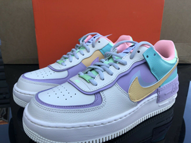

Информация для владельцев обувных магазинов.
Уже сейчас стоит задуматься об ассортименте магазина детской обуви, которую заботливые родители будут покупать осенью и зимой. Владельцы небольших бутиков стараются заблаговременно заказать партию актуальных моделей, чтобы обеспечить предложение на возросший спрос. В этом отношении полезным будет сайт Dummi-Shoes.ru - https://www.dummi-shoes.ru/obuv/tufli-polubotinki - интернет-магазин предлагает обувь по ценам производителей и работает с оптовыми заказчиками. В его каталоге найдутся актуальные модели для детей и подростков для разных сезонов, в том числе и для осени и зимы.

Яркие принты
Так как большинство моделей для девочек словно нарочито шьются с грубыми швами и массивными элементами, дизайнеры предложили «облегчить» визуальное восприятие с помощью ярких принтов – флоральных или анимальных. Украсить осенние ботиночки можно с помощью нашивок, блесток и даже меха. Тогда тракторная подошва – такая практичная и надежная – будет контрастировать с декоративными элементами и приобретет особый шарм.
Вышивка
Еще одним способом сделать детскую обувь более привлекательной стала вышивка. Благодаря тому, что современные технологии позволяют создать узор любого размера и исполнения, производителям удается предложить покупателям интересные и свежие модели, которые нравятся и родителям, и детишкам.
Комбинирование фактур
Чтобы добиться оригинального внешнего вида, дизайнеры прибегают к еще одной методике – комбинированию фактур и материалов. Например, в осенней обуви могут неплохо сочетаться гладкая и рельефная кожа, а также замша. Используются велюр и эластичные вставки ярких цветов, они придают моделям динамичности и футуристичности.
Тренд Athleisure
Хотя это не новое веяние, все же в этом сезоне оно будет продолжать оставаться в тренде – Athleisure. Милые мультяшные персонажи, декорирование переливающимися камнями и разноцветными меховыми вставками – это очень нравится девочкам. Родители могут воспользоваться любовью малышек к таким украшениям и подобрать качественную, добротную обувь, в которой ножкам будет удобно, тепло и просторно.
Смелые элементы для мальчиков
Мальчики так же, как и девочки, любят выражать свою индивидуальность с помощью ярких элементов. Вышивка и цветной мех им вряд ли понравятся, а вот неоновые вставки на подошве или абстрактный принт на мысе, например, в виде глаз какого-то животного, вызовут настоящий восторг у юного модника.